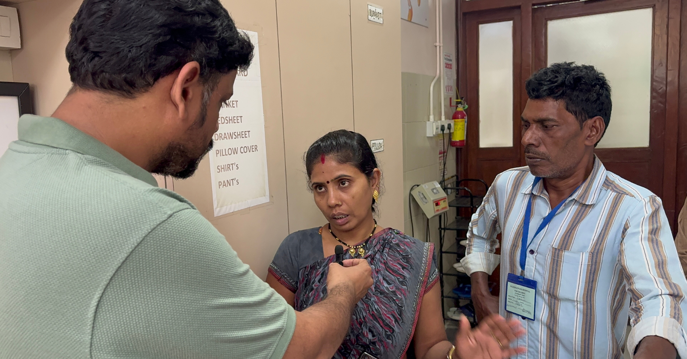
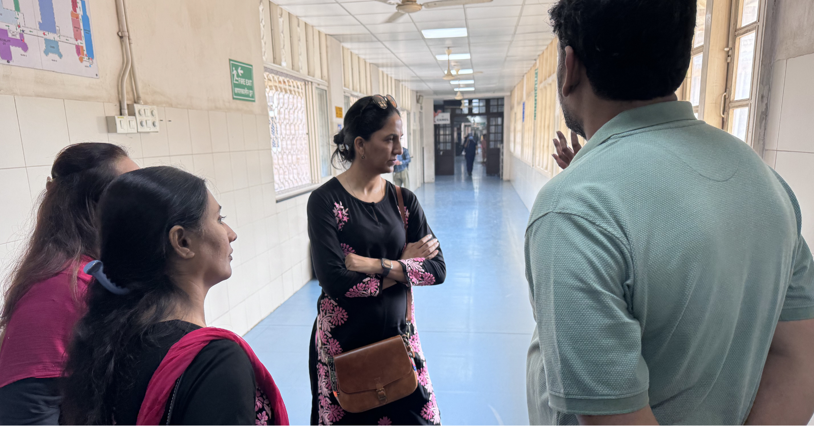
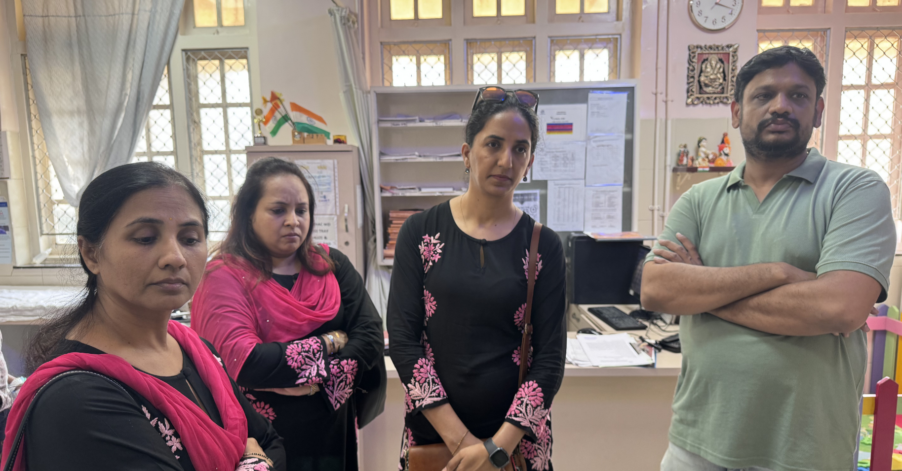

Medical emergencies can strike any family without warning. Through our Emergency Medical Support initiative, Being Sevak Charitable Trust provides timely financial assistance, treatment support, medicines, hospitalization aid, and life-saving care to underprivileged patients facing critical health conditions. Our mission is to ensure that no life is lost due to lack of medical resources or financial constraints.

Providing urgent medical aid for life-threatening illnesses, surgeries, and emergency treatments.
Helping financially challenged families access quality healthcare and hospitalization facilities.
Supporting patients with essential medicines, diagnostics, and specialized medical care.
Every contribution helps a patient receive timely treatment and a second chance at life.
Master Imad Shaikh, an 8-month-old child suffering from congenital heart disease, came from Uttar Pradesh with his family seeking urgent medical assistance. His father worked as a labourer and his mother was a housewife. Through the support of Being Sevak Charitable Trust, he received emergency medical help and hospitalization support during a critical stage of treatment.
Explore glimpses of our initiatives, community outreach programs, and the positive impact created through collective efforts.


